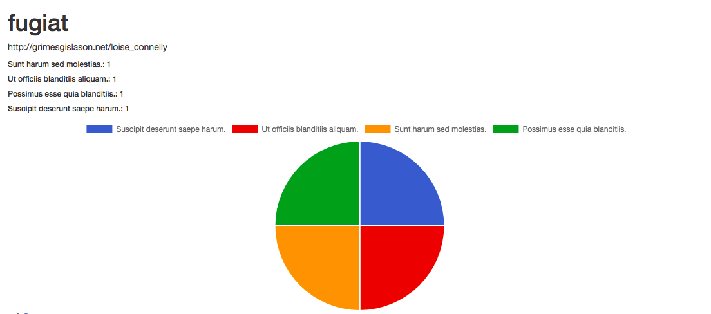
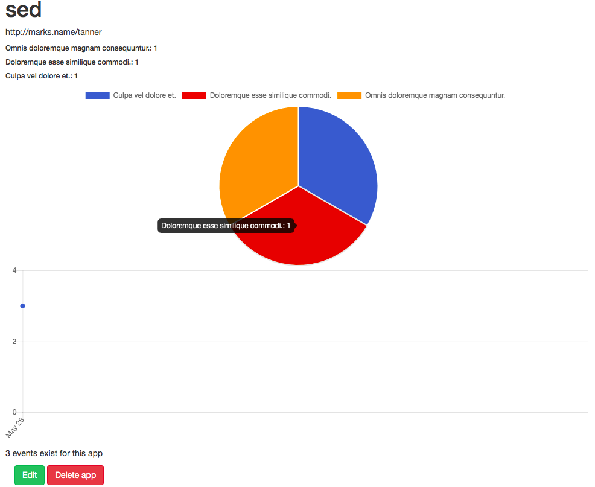

SOLUTION
We utilized the devise gem for authentication.
This is an easy way to allow users to sign up for accounts and to receive email confirmations.
Refer to the devise gem information linked here.
Blocmetrics should track events from multiple applications. T
herefore, we need to register each application with a unique attribute, or its URL, so that when Blocmetrics receives an event, it knows which application to associate the event.
We have the code for the registered applications controller with the appropriate CRUD actions.
def create
@registered_application = RegisteredApplication.new(app_params)
@registered_application.user = current_user
if @registered_application.save
flash[:notice] = "Application was saved into the system!"
redirect_to @registered_application
else
flash[:notice] = "There was an error!"
render :new
end
end
def update
@registered_application = RegisteredApplication.find(params[:id])
@registered_application.name = params[:registered_application][:name]
@registered_application.url = params[:registered_application][:url]
if @registered_application.save
flash[:notice] = "Application was saved into the system!"
redirect_to @registered_application
else
flash[:notice] = "There was an error!"
render :edit
end
end
def destroy
@registered_application = RegisteredApplication.find(params[:id])
if @registered_application.destroy
flash[:notice] = "\"#{@registered_application.name}\" was deleted successfully."
redirect_to registered_applications_path
else
flash.now[:alert] = "There was an error deleting the app."
render :show
end
end
We need to make sure that our CRUD actions are accessed in our views.
Our create action and views should be able to create a new registration associated with a user.
Our delete action should de-register and destroy the application registration.
As always, we need to be able to test our code. And ask several questions:
- Are you able to register multiple applications?
- Are the registered applications displayed after creation?
- Are you able to de-register and then re-register an application by the same name?
- Are you able to view an index of registered applications?
When Blocmetrics receives an event, it should store the name of the event.
This will be done through the event model that is associated with a registered application with an event name attribute.
At this point of the project, I seeded the database to test my application with some fake data.
I used the Faker gem to simulate tracked events.
At this point of the project, we want to work with real time data.
In order for Blocmetrics to receive incoming events from registered applications, we will need an API controller and routes.
Our events controller needs to match our API route.
In order to find the registered application that matches the source of the API request, we use request.env['HTTP_ORIGIN'].
If we find an API request from an unregistered application, we would get a return of nil.
We need to return an error to the requestor if this happens.
If the event saves successfully in API::EventsController#create, we want to return a success message.
CORS
Client side Javascript code will need to send an AJAX request to the Blocmetrics API so that we can store events.
Due to security risks, browsers normally don't allow cross-origin requests.
This is where cross-origin resource sharing comes in (CORS).
CORS works by making preliminary request to the target server, asking if the cross-domain request will be permitted.
This uses HTTP OPTION verb, which is not part of Rails' restful routes.
An OPTION request precedes a GET or POST request and checks whether the route accepts a cross-origin request.
We need to set CROS response headers so our controller actions will allow POST requests across domains.
Lastly, we want to test our API using curl.
In our terminal, we input:
$ curl -v -H "Accept: application/json" -H "Origin: http://registered_application.com" -H "Content-Type: application/json" -X POST -d '{"name":"foobar"}' http://localhost:3000/api/events
We need to confirm that a new event was created with the event name "foobar" and successfully associated with the registered application.
We should also confirm with another curl request, that from an unregistered URL, a new event is not created.
Blocmetrics should be able to track events using JavaScript snippets.
The only function our snippet needs to support is:
blocmetrics.report('event name here');
The function above makes an AJAX request to the server-side API to create the event on our server.
We added a JavaScript charting library, Chartkick library into our Gemfile.

Chartkick can generate an events pie chart.
In order to create a line chart of events over time, utilize the Groupdate gem.
We need to confirm that a pie chart of all events and a line graph of all events over time are displayed on our show page of a registered application.
